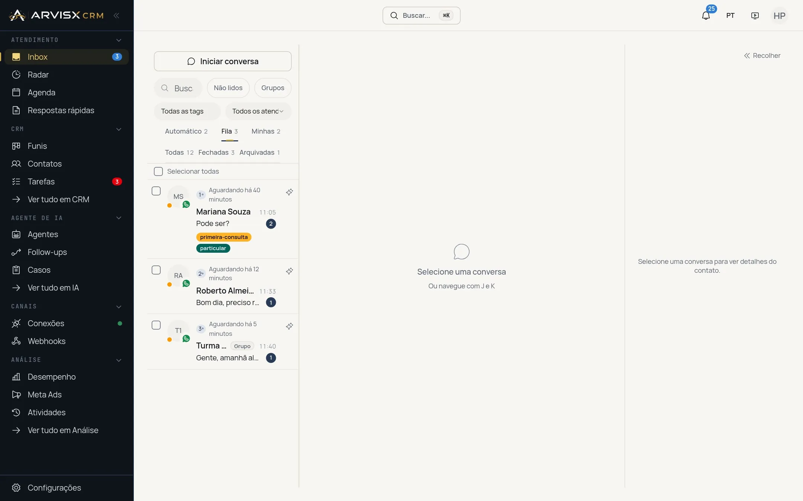
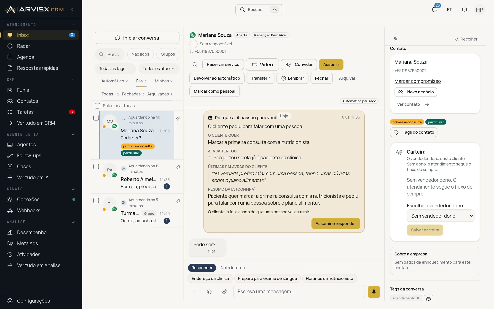
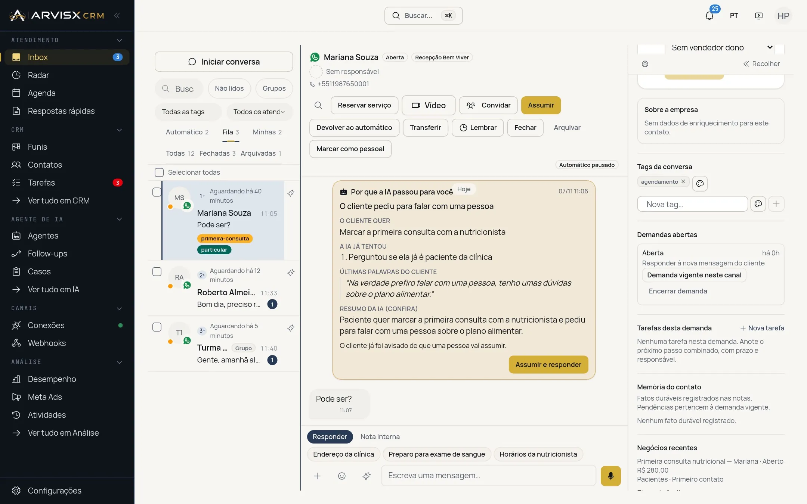

Guia de uso
Inbox
Onde você e a IA atendem os clientes do WhatsApp lado a lado: a fila de quem espera, a conversa, a ficha do cliente e os atalhos do dia a dia.
Lição 1 de 9
Conhecendo a Inbox
Reconhecer as três partes da Inbox (lista, conversa e ficha do cliente) e abrir a primeira conversa.
-
Passo 1As três partes da tela
A Inbox é onde você lê e responde os clientes. À esquerda fica a lista de conversas, no meio aparece a conversa que você abrir e à direita fica a ficha do cliente. Quando você entra pelo menu, ela abre na aba Fila, que mostra quem está esperando por uma pessoa. Ao lado ficam as abas Automático (conversas que o atendimento automático está cuidando) e Minhas (as que estão com você). Na linha de baixo, as abas Todas, Fechadas e Arquivadas mostram todas as conversas, as já encerradas e as guardadas fora da fila.
Dica: No meio da tela aparece "Ou navegue com J e K": as teclas "j" e "k" passam para a próxima conversa e para a anterior. Você aprende esses atalhos na última lição.

- Lista de conversas
- Aqui aparece a conversa aberta
- Aqui fica a ficha do cliente
- Abas da lista (abre na Fila)
-
Passo 2Começar uma conversa você mesmo
O botão "Iniciar conversa", no alto da lista, serve para você mandar a primeira mensagem para um cliente, sem esperar que ele escreva. A conversa abre no seu nome e o atendimento automático não responde nela. A exceção é quando outro atendente já está cuidando daquele número: aí a conversa continua com ele. Para seguir, clique na conversa da Mariana Souza, a primeira da lista.
Dica: Só quem é atendente ou tem cargo acima vê este botão.

- Falar primeiro com um cliente
-
Passo 3Abrindo uma conversa
Clique numa linha da lista para abrir a conversa no meio da tela. A linha aberta fica com o fundo destacado e uma barra colorida à esquerda. Um segundo e meio depois de abrir, o contador de mensagens não lidas some sozinho. Nesta conversa aparece o cartão "Por que a IA passou para você": é o resumo que o atendimento automático deixa quando passa o cliente para uma pessoa. O botão "Assumir e responder" do cartão passa a conversa para você; isso fica para a lição sobre assumir um cliente.

- Conversa aberta
- Resumo deixado pela IA
-
Passo 4O topo da conversa
No topo aparecem o nome do cliente, um selo que diz se o atendimento está aberto ou já terminou e quem está cuidando dele agora: uma pessoa, o atendimento automático ou ninguém ("Sem responsável"). Ao lado do nome aparece também o número por onde o cliente chegou (aqui, "Recepção Bem Viver"). Os botões logo abaixo, como Assumir e Fechar, valem para esta conversa. No canto direito, abaixo dos botões, o aviso "Automático pausado" diz que o atendimento automático não responde nesta conversa. "Reservar serviço" marca um horário na agenda e "Marcar como pessoal" tira o contato da Inbox; os outros botões aparecem nas próximas lições.

- Situação do atendimento
- Número por onde o cliente chegou
- Quem está cuidando agora
- Assumir: a conversa passa para você
- Fechar: encerra o atendimento
- Automático pausado
-
Passo 5A ficha do cliente
A coluna da direita é a ficha do cliente. No alto ficam o telefone e as etiquetas do cliente. Mais abaixo vêm as "Tags da conversa", que valem só para este atendimento, e as "Demandas abertas" (o que ele pediu e ainda não foi resolvido). Rolando a ficha para baixo aparecem os "Leads recentes" (os negócios dele no funil) e os "Pedidos recentes". Tudo sem você precisar sair da conversa. Os outros blocos, como "Sobre a empresa" e "Tarefas desta demanda", ficam para a lição sobre a ficha. Em telas largas de computador ela fica à vista (dá para escondê-la no botão "Recolher"); no celular, ela abre pelo botão "Ficha".
- Ficha do cliente
- Demandas abertas
-
Passo 6Ajustar a largura da lista
Para deixar a lista de conversas mais larga ou mais estreita, arraste a divisória entre a lista e a conversa. Dar dois cliques nela volta as colunas à largura padrão, e o navegador guarda a largura que você escolheu.
Dica: Com o foco na divisória, as setas ← e → do teclado também mudam a largura.

- Arraste para ajustar